A. Theme Information
- Name: Curious
- Description: Responsive & clean, magazine style Ghost theme
- Current Version: 2.1.0
- Last Updated: July 6, 2020
- Creator: JustGoodThemes.com
- Ghost version: >= 3.22.0
B. Theme Structure
Here's an overview of the main theme files:
default.hbs- The parent template file that includes the global header and footer.index.hbs- The main template that generates a list of posts.home.hbs- The template that provides special content for the home page, i.e. intro section or featured posts carousel.post.hbs- The template used to render single posts.page.hbs- The template used to render static pages.author.hbs,tag.hbs- The templates used for author and tag archives respectively.error.hbs,error-404.hbs- The templates for any 500 or 404 errors.custom-membership.hbs- The custom template that can be selected in the admin interface. Used to display available membership plans.acount.hbs,signin.hbs,signup.hbs,subscribe.hbs- The templates that are necessary for the members feature. Located in themembersfolder.routes.yaml- Ghost's routing configuration which you should upload if the members feature is enabled.
C. How to Upload a Theme to Your Ghost Blog - top
- Log into the admin section of your Ghost blog:
yourblog.com/ghost. - Click on Design under Settings in the left hand column and scroll to the very bottom.
- Click on Upload a theme.
- Drag-and-drop or click and locate the zip file for your theme.
- Once it is uploaded, click on either Activate Now to activate the theme immediately or Close if you want to activate later on.
D. Theme Features - top
1. Favicon
To add a favicon, navigate to Settings → General in your Ghost admin dashboard and click Upload Image next to Publication icon.
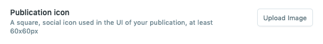
2. Publication Logo
To add a logo, navigate to Settings → General in your Ghost admin dashboard and click Upload Image next to Publication logo. If no publication logo was added, the theme shows the site title.

3. Publication Cover
The publication cover image is displayed in the background of intro section and error, member sign in, sign up and subscribe pages.
To add a publication cover, navigate to Settings → General in your Ghost blog admin dashboard and click Upload Image next to Publication cover.
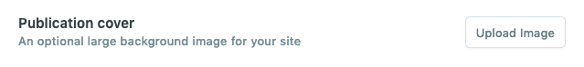
4. Navigation
You can add, edit, delete and reorder menu links on your Ghost blog, directly from the navigation tool within the blog admin area, located at Settings → Design.
To add a menu item to your navigation menu, enter a label for the menu item in the label field and the destination for the menu item to link to in the URL field.
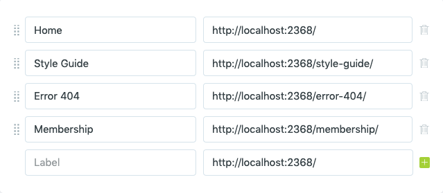
Once you have organized your menu, click Save.
5. Social Media Links
The social media links are displayed in the footer of the theme.
To add Facebook and Twitter links, navigate to Settings → General, click Expand next to Social accounts and enter the URLs of your Facebook and Twitter profiles.
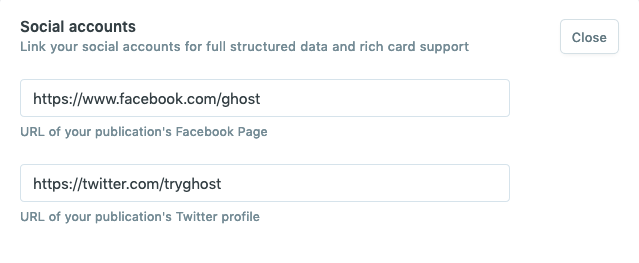
All other social media links can be added manually in the footer.hbs partial located in the partials folder of the theme. For instance, if you want to add the link to your GitHub account use the following code:
<a href="#" class="square dark" target="_blank" rel="noopener">{{> "icons/github"}}</a>To see the available icons, please check the icons folder of the theme located in the partials folder.
6. Featured Images
You can add featured images to all of your posts, static pages, tag and author pages.
To add a post/page featured image, open Post/Page Settings Menu by clicking on the gear icon in the top right corner of the Ghost editor, click the "Upload post image" button and locate the image on your computer. Save it and you're all set.
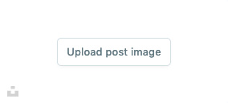
To add a tag image, navigate to Tags, select the tag you want to edit, click the "Upload tag image" button and locate the image on your computer. Save it and you're all set.
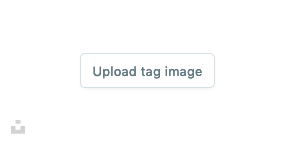
To add an author image, navigate to Staff, select the author you want to edit, click the "Change Cover" button and locate the image on your computer. Save it and you're all set.
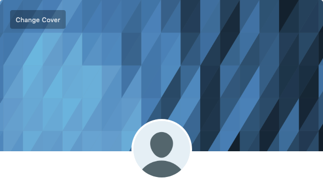
7. Featured Posts Carousel or Intro Section
If you have any posts marked as featured, the featured posts carousel is displayed on the homepage. It showcases up to five of your latest featured posts.
To mark a post as featured, open Post/Page Settings Menu by clicking on the gear icon in the top right corner of the Ghost editor and check the "Feature this post" box.

If there are no posts marked as featured, the intro section is displayed instead. You can edit the information displayed in the intro section in the home.hbs file located in the main theme folder. By default, the site title, description and publication cover image are displayed. Also, if the "Members" feature is enabled in Ghost, the "Subscribe" button appears which leads to the subscribe page.
8. Members
The theme supports Ghost's Members feature. To find out more about it, check out the Ghost members documentation.
Important! Please keep in mind that the Members feature is still in Beta. It means it may change at any time or some things may not work as expected.
Members Activation
To start using Members, you first need to enable this feature by checking the "Enable members" box in Settings → Labs in your Ghost admin dashboard.
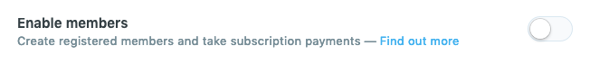
Next, unzip the theme archive file and locate the file named routes.yaml. Then navigate to Settings → Labs and upload this file by clicking the "Upload routes YAML" button.
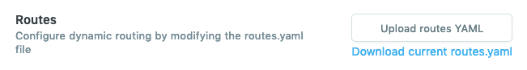
Membership Plans
The theme has three available membership plans: free, monthly and yearly. These plans are displayed in the member account page (members/account.hbs) and custom membership template (custom-membership.hbs).
The feature list of each plan can be adjusted by editing the corresponding partial file. For instance, to adjust the features of the free plan, open the membership-free.hbs within the partials folder and edit the <ul> element contents:
<ul>
<li>Full access to posts for subscribers</li>
<li>Weekly email newsletter</li>
<li>No advertising</li>
</ul>Proceed in the same way with membership-monthly.hbs and membership-yearly.hbs.
Custom Membership Template
The theme has a custom template "Membership" that allows you to display available membership plans for your site visitors. To use this template, create a page, open the page settings menu by clicking on the gear icon in the top right corner and select "Membership" from the "Templates" dropdown.

The content added for this page is displayed below the membership plans section, while the custom excerpt, is displayed above the membership plans section in bigger font.
To adjust the feature list of each membership plan, follow the instructions outlined in the previous section.
9. Syntax Highlighter
Curious comes with Rainbow.js to automatically syntax highlight code blocks in your posts. To make syntax highlighter work, just wrap the code in pre and code tags and change the value of "data-language" attribute to your code language:
<pre><code data-language="javascript">var testing = true;</code></pre>By default, the supported languages include: C, CSS, generic, HTML, JavaScript. If you need to support more languages, visit https://craig.is/making/rainbows, select the languages you need and download the JS file. Replace the Rainbow code in the plugins.js file located in the assets/js folder of the theme with the contents of the file you downloaded.
10. Image and Blockquote Styles
When adding blockquotes and images to your posts and pages, you can use special CSS classes to create a more attractive flow of content.
For instance, you can align your image left or right, by wrapping it in a div tag with the CSS class alignleft or alignright like this:
<div class="alignleft">
<img src="/content/images/2019/07/my_image.jpg" alt="Alt Text">
</div><div class="alignright">
<img src="/content/images/2019/07/my_image.jpg" alt="Alt Text">
</div>alignleft or alignright CSS classes can be applied to blockquotes as well. See an example below.
<blockquote class="alignleft">
<p>Good ideas never go out of style.</p>
</blockquote><blockquote class="alignright">
<p>Good ideas never go out of style.</p>
</blockquote>11. Disqus Comments
Curious comes with Disqus commenting built-in, you just need to have a Disqus account. To enable commenting, you have to add your Disqus account shortname. Navigate to Settings → Code injection and add the following code into the Site Header field (replace yourshortname with your forum's shortname):
<script>var disqus_shortname = 'yourshortname';</script>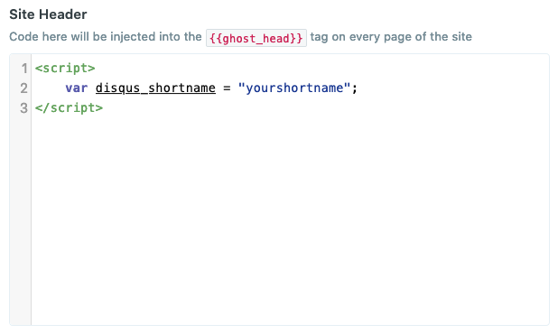
If you wish to disable commenting, just remove the following lines from the post.hbs file located in the main theme folder:
{{!-- The tag below includes the theme comments - partials/comments.hbs --}}
{{> comments}}12. Sidebar
The theme sidebar contains Ghost subscription form and hard-coded text widgets. To delete or reorder the widgets, edit the sidebar.hbs file located in the partials folder of the theme.
{{!-- Includes the text widget - partials/widget-text1.hbs --}}
{{> "widget-text1"}}
{{!-- If members enabled and user not logged in, includes the subscribe form widget - partials/widget-subscribe.hbs --}}
{{> "widget-subscribe"}}
{{!-- Includes the text widget - partials/widget-text2.hbs --}}
{{> "widget-text2"}}To adjust the information displayed in the widgets, open the corresponding partial file locate in the partials folder of the theme.
For instance, to edit the "About" widget text, open the widget-text1.hbs file located in the partials folder of the theme and make the adjustments you need.
13. Footer Widgets
The theme footer widget area contains "Latest Posts" and "Tags" widgets. To delete or reorder the widgets, edit the footer-widgets.hbs file located in the partials folder of the theme.
To adjust the information displayed in the widgets, open the corresponding partial file locate in the partials folder of the theme.
14. Copyright Information
You can edit the copyright information in the footer.hbs file within the partials folder of the theme.
15. Google Analytics
First, you need to create a Google Account. If you already have one, you should be able to sign into Google Analytics using your existing Google Account credentials.
Once you've logged into Google Analytics, follow their guide to create an account for your blog. Once the account has been created, you'll receive a tracking code. Copy your tracking code and head over to your Ghost blog admin dashboard. Navigate to Code Injection settings and paste your tracking code into the Blog Header field.
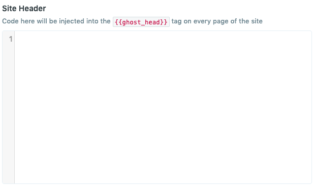
Or you can paste your tracking code inside the <head> tag in the default.hbs file located in the main theme folder, right below the {{ghost_head}} and above </head>.
16. Search
The search functionality implemented in the theme requires Content API Key.
To obtain Content API Key, navigate to Settings → Integrations in your Ghost admin dashboard and click Add custom Integration. Type the name of your custom integration and click Create. Copy your Content API key and click Save.
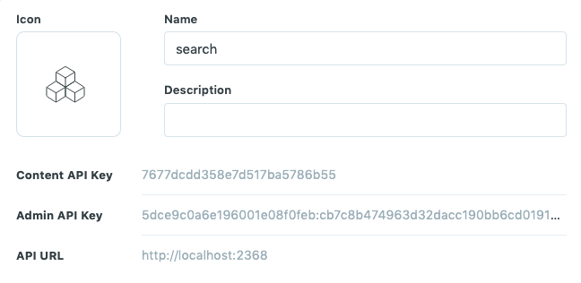
Next, navigate to Settings → Code injection and add the following code into the Site Header field (replace yoursearchkey with your generated Content API Key):
<script>var search_key = 'yoursearchkey';</script>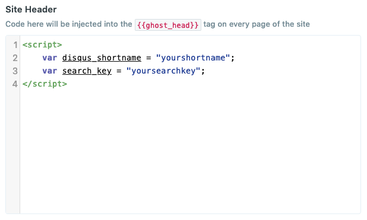
E. Translation - top
The Curious theme is fully translatable. You can find the default file in the target locales folder. Copy locales/en.json to locales/[language_code].json. The "language_code" must be replaced with a valid code. You can edit the renamed translation file with any plain text editor.
Even if your site is in English, you can customize any theme texts by simply editing the default English file (locales/en.json), without modifying the theme templates.
You can find more information on how to translate the theme at https://ghost.org/docs/api/v3/handlebars-themes/helpers/translate/.
F. Style Adjustments - top
To customize the theme style, you’ll need to either edit the theme stylesheet or use the Code Injection tool located in Settings → Code Injection in your Ghost admin dashboard.
The theme stylesheet style.css is located in the assets/css folder. You will also find the Sass files included in the assets/sass folder. If you make changes in Sass files, you can use a Sass compiler app, like Scout-App, to recompile the stylesheet.
For small tweaks, you can simply use the Code Injection tool and place your CSS rules in the Site Header field. For instance, if you have uploaded a publication logo and want to adjust the logo size, you can do it by adding the following CSS:
<style>
.site-logo img {
max-width: 150px;
}
</style>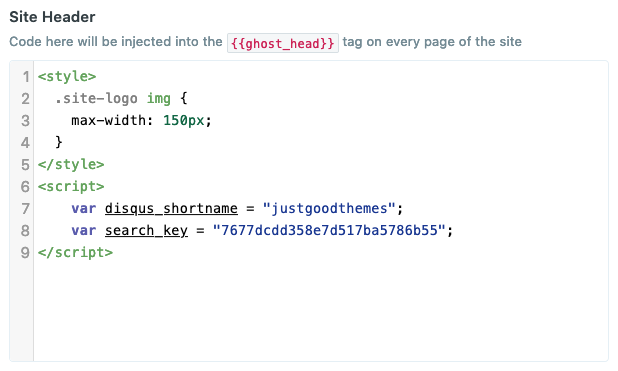
G. Credits - top
- Montserrat font: https://www.google.com/fonts/specimen/Montserrat
- Font Awesome icons: http://fontawesome.io
- FitVids plugin: http://fitvidsjs.com/
- Rainbow plugin: https://craig.is/making/rainbows
- Slick Carousel plugin: http://kenwheeler.github.io/slick/
- SimpleLightbox plugin: https://simplelightbox.com/
- Fuse.js plugin: https://fusejs.io/
H. Support - top
The documentation included provides all the information needed to get the theme installed and customized. However, if you have any questions you can email us at support@justgoodthemes.com, and we will be happy to help you.
If you have any bug reports, or feature requests, please let us know!
I. Updates - top
As Ghost platform grows, so will this theme. We’re dedicated to keeping our Curious up to date.